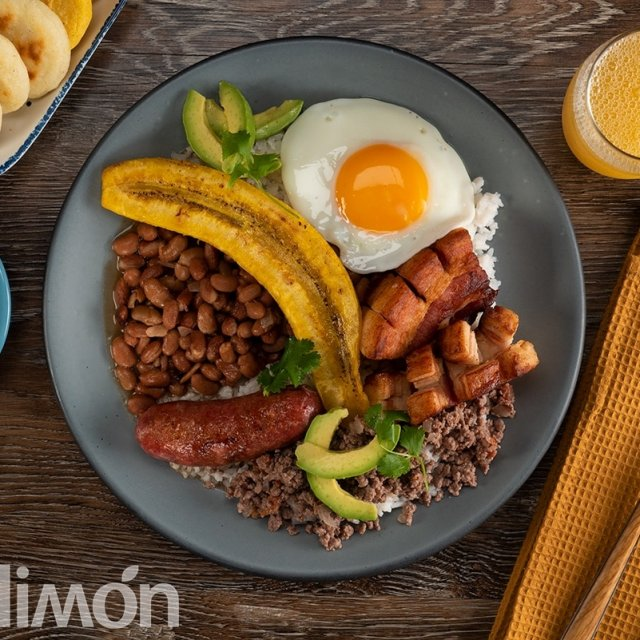

La Bandeja paisa
La bandeja paisa es, sin duda, uno de los platos más reconocidos de la gastronomía colombiana. Es tradicional de las tierras antioqueñas, pero se consume en todo el país e incluso en el extranjero, donde ha llegado de la mano de migrantes
¿Qué ingredientes se necesitan para hacer una bandeja paisa para 6 personas?
- 3 tazas de fríjoles de cargamanto
- rojos
- 2 libras de carne molida
- 2 libras de chicharrón
- 2 libras de carne pulpa molida
- 6 chorizos
- 6 huevos
- 1 libra de arroz
- 3 Plátanos maduros
- 4 cebollas grandes
- 4 tomates
- 1 zanahoria mediana
- Medio plátano verde
- Aceite
- Sal al gusto
El éxito de la bandeja paisa está en la preparación de los fríjoles. Para que tus fríjoles sean más fáciles de cocinar, debes ponerlos a remojar en un recipiente con agua. Déjalos toda la noche para que estén más blandos a la hora de ponerlos a cocinar.
